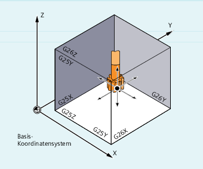

Mit G25/G26 lässt sich der Arbeitsbereich (Arbeitsfeld, Arbeitsraum), in dem das Werkzeug verfahren soll, in allen Kanalachsen begrenzen. Die Bereiche außerhalb der mit G25/G26 definierten Arbeitsfeldgrenzen sind für Werkzeugbewegungen gesperrt.
Die Koordinatenangaben für die einzelnen Achsen gelten im Basiskoordinatensystem:
Die Arbeitsfeldbegrenzung für alle gültig gesetzten Achsen muss mit dem Befehl WALIMON programmiert sein. Mit WALIMOF ist die Arbeitsfeldbegrenzung unwirksam. WALIMON ist Standardeinstellung und muss nur programmiert werden, wenn zuvor die Arbeitsfeldbegrenzung ausgeschaltet wurde.
| G25 X…Y…Z… | |
| G26 X…Y…Z… | |
| WALIMON | |
| ... | |
| WALIMOF |
| Untere Arbeitsfeldbegrenzung Wertzuweisung in Kanalachsen im Basiskoordinatensystem |
| Obere Arbeitsfeldbegrenzung Wertzuweisung in Kanalachsen im Basiskoordinatensystem |
| Untere bzw. obere Arbeitsfeldgrenzen für die einzelnen Kanalachsen Die Angaben beziehen sich auf das Basiskoordinatensystem. |
| Arbeitsfeldbegrenzung für alle Achsen einschalten |
| Arbeitsfeldbegrenzung für alle Achsen ausschalten |
Neben der programmierbaren Eingabe der Werte über G25/G26 ist auch eine Eingabe über achsspezifische Settingdaten möglich:
SD43420 $SA_WORKAREA_LIMIT_PLUS (Arbeitsfeldbegrenzung plus)
SD43430 $SA_WORKAREA_LIMIT_MINUS (Arbeitsfeldbegrenzung minus)
Aktivierung und Deaktivierung der über SD43420 und SD43430 parametrierten Arbeitsfeldbegrenzung erfolgen richtungsspezifisch über die sofort wirksamen achsspezifischen Settingdaten:
SD43400 $SA_WORKAREA_PLUS_ENABLE (Arbeitsfeldbegrenzung in positiver Richtung aktiv)
SD43410 $SA_WORKAREA_MINUS_ENABLE (Arbeitsfeldbegrenzung in negativer Richtung aktiv)
Durch die richtungsspezifische Aktivierung/Deaktivierung ist es möglich, den Arbeitsbereich für eine Achse nur in einer Richtung zu begrenzen.
| Hinweis |
Die mit |
| Hinweis |
Mit |
| Programmcode | Kommentar |
|---|---|
| N10 G0 G90 F0.5 T1 | |
| N20 G25 X-80 Z30 | ; Festlegung der unteren Begrenzung für die einzelnen Koordinatenachsen |
| N30 G26 X80 Z330 | ; Festlegung der oberen Begrenzung |
| N40 L22 | ; Abspanprogramm |
| N50 G0 G90 Z102 T2 | ; zum Werkzeugwechselpunkt |
| N60 X0 | |
| N70 WALIMOF | ; Arbeitsfeldbegrenzung ausschalten |
| N80 G1 Z-2 F0.5 | ; Bohren |
| N90 G0 Z200 | ; zurück |
| N100 WALIMON | ; Arbeitsfeldbegrenzung einschalten |
| N110 X70 M30 | ; Programmende |
Siehe auch:
Arbeitsfeldbegrenzung im BKS (G25/G26, WALIMON, WALIMOF): Weitere Informationen
Arbeitsfeldbegrenzung im WKS/ENS (WALCS0 ... WALCS10)